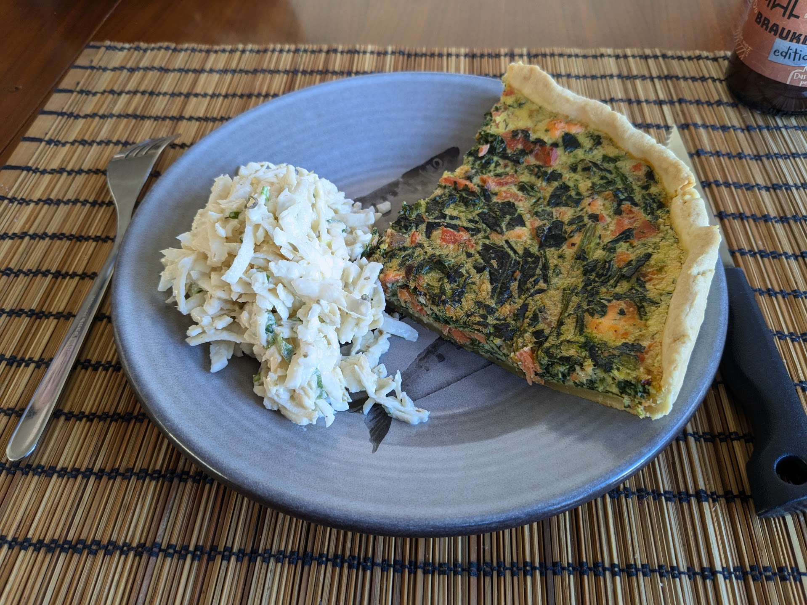

Quiche saumon-épinards

Ici avec du céleri rémoulade.
Pour 4 parts :
- Une pâte brisée
- 100g de filet de saumon, avec ou sans la peau
- 100g de saumon fumé
- 200g d'épinards surgelés (hachés ou non, mais sans crème ni assaisonnement)
- 3 œufs
- 250mL de crème entière
- Quelques brins d'aneth
- Un peu de beurre
- Une cuillère à café de noix de muscade moulue
- Une pincée de flocons de piment
- Sel, poivre
- Faire préchauffer le four à 180°C en chaleur tournante. Étaler la pâte sur un plat à tarte et la faire cuire à blanc (cf. sa recette) un quart d'heure envron.
- Pendant ce temps, faire décongeler les épinards dans une poêle à feu moyen avec du beurre, un peu de sel, de poivre, et les flocons de piment. Réserver une fois chaud.
- Pendant ce temps, laver, sécher, et émincer l'aneth. Mélanger les œufs avec la crème, la muscade, l'aneth, un peu de sel et de poivre.
- Lorsque les épinards sont cuits, faire fondre un peu plus de beurre dans la poêle, et y faire cuire le filet de saumon côté peau (si il y a de la peau) avec un peu de sel et de poivre. Lorsque ça commence à avoir l'air cuit sur les côtés, cuire quelques minutes de l'autre côté.
- Pendant ce temps, couper le saumon fumé en petits dés.
- Lorsque le saumon est cuit (si ça a encore un peu l'air cru au milieu c'est pas très grave, mieux vaut ça que ça soit trop cuit), le couper en dés, tout mélanger et disposer dans la pâte.
- Enfourner environ 25 minutes. La quiche est cuite lorsqu'elle commence à être légèrement dorée et solide. La laisser tiédir quelques minutes (ou plus longtemps dans le four éteint) avant de la manger.
Remarque : la peau du saumon devient un peu croustillante lorsqu'on cuit le saumon dessus. On peut soit la couper en petits morceaux et l'inclure dans la quiche, ou pas. Si elle attache à la poêle, déglacer avec un peu de crème ou de lait et inclure la sauce dans la quiche.
Retour à la liste des recettes